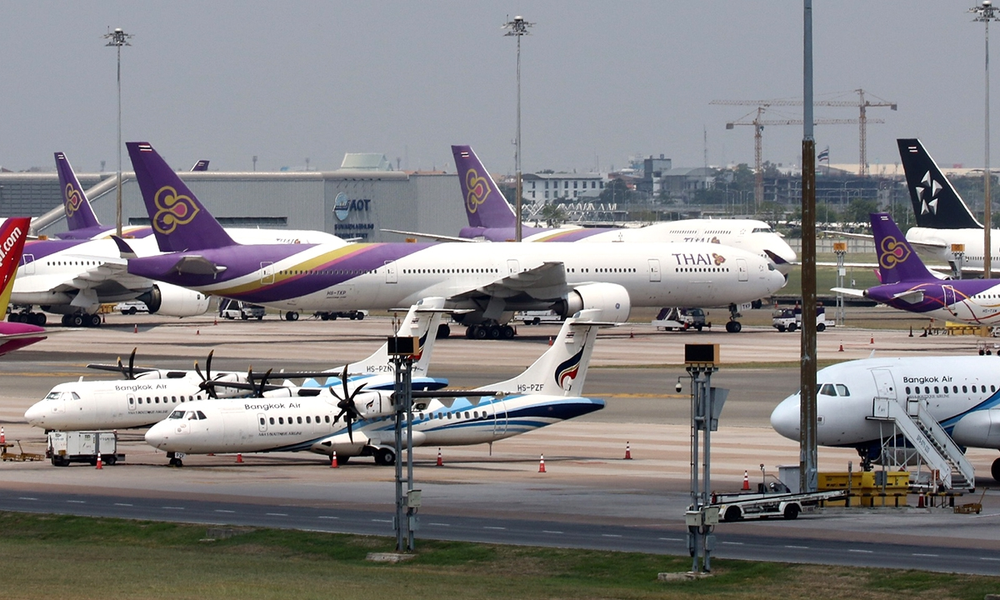
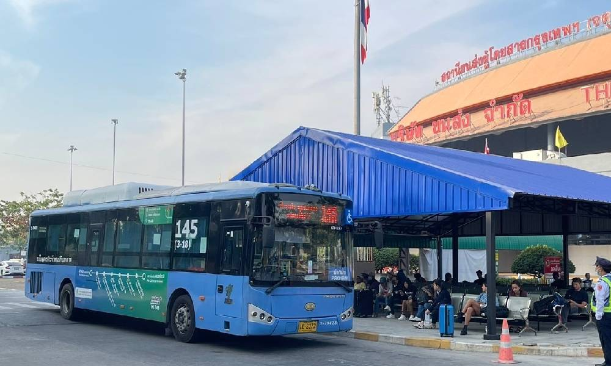

จากกรุงเทพฯ สู่สงขลา และจากตัวเมืองไปยังชายหาดต่างๆ

บินจากสนามบินดอนเมืองหรือสุวรรณภูมิ ไปยัง สนามบินหาดใหญ่ (HDY) ใช้เวลาประมาณ 1 ชั่วโมง 20 นาที จากนั้นต่อรถแท็กซี่หรือรถโดยสารเข้าตัวเมืองสงขลา (ระยะทางจากหาดใหญ่ไปสงขลาประมาณ 30 กม. ใช้เวลา 30–45 นาที)

มีรถทัวร์ออกจากสถานีขนส่งหมอชิต (ใหม่) และสายใต้ ปลายทางที่สถานีขนส่งสงขลาหรือหาดใหญ่ ใช้เวลาประมาณ 12–14 ชั่วโมง (ขึ้นอยู่กับสภาพการจราจรและจำนวนป้ายจอด)
รถยนต์: ใช้เส้นทางมอเตอร์เวย์และทางหลวงหมายเลข 4 (เพชรเกษม)
ระยะทางประมาณ 950–1,000 กม. ใช้เวลาขับประมาณ 12–14 ชั่วโมง
รถไฟ: มีขบวนรถไฟจากกรุงเทพฯ (หัวลำโพง) ไปสถานีหาดใหญ่
จากนั้นต่อรถเข้าสงขลา
อยู่ใกล้ใจกลางเมืองสงขลามาก สามารถเดินทางได้หลายวิธี:
ใช้รถยนต์หรือรถจักรยานยนต์จะสะดวกที่สุด สามารถสอบถามคนท้องถิ่นหรือใช้แอปแผนที่นำทางได้